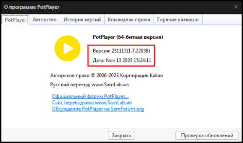
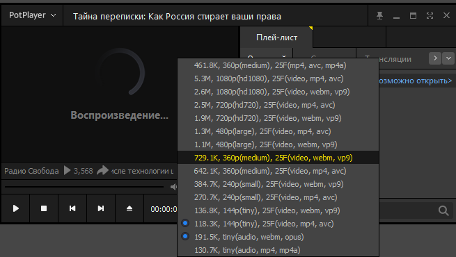

Сразу извинюсь за вопрос по личной проблеме, возможно, перегружающий тему, только самостоятельный поиск решения ничего не дал, поэтому обращаюсь к этому форуму, который мне помогал ранее и неоднократно.
Уже давно я пользуюсь для просмотра, а чаще для прослушивания роликов Youtube
проигрывателем Potplayer. Это очень удобно.
После истории с "замедлением youtube " проблема решилась установкой последней
версии GDPI 0.2.3rc1, которая использовалась с настройками по умолчанию. Potplayer для воспроизведения Youtube заработал почти идеально.
12 сентября Potplayer перестал грузить ролики с использованием GDPI 0.2.3rc1 с
настройками по умолчанию. Только считывал название ролика, продолжительность, загрузка и воспроизведение не удавались.
Проблема открытия сайта Youtube и воспроизведения роликов непосредственно в
браузере была решена изменением параметра с -9 на -7. Только Potplayer с этим
параметром GDPI не заработал. Даже не считывает параметры ролика.
Попытки применить другие предлагаемые варианты параметров результата не дали.
Возвращение параметра -9, а также применение параметров -8, -6 оживляло работу
Potplayer только без воспроизведения роликов. Как я понял эти параметры предполагают работу т.н wrong-seq, которую заблокировали 12.09.
Я не специалист по сетевым настройкам, обычный пользователь.
В наличии старый ноут HP6730s. Поэтому - Windows 7, поэтому браузер FF 115.15 ESR.
Столичный федеральный провайдер.
Может кто-то сможет помочь или знает как решить проблему с воспроизведением
Youtube в Potplayer путем изменения его настроек, если такое вообще возможно?
7ой - это конфиг с wrong-chksum. Странно, что у вас браузер с ним работает…
А с таким конфигом: goodbyedpi.exe -f 2 -e 2 --reverse-frag --max-payload --dns-addr 77.88.8.8 --dns-port 1253 --dnsv6-addr 2a02:6b8::feed:0ff --dnsv6-port 1253 --blacklist ..\russia-blacklist.txt --blacklist ..\russia-youtube.txt как работает?
у меня не работали “1_russia_blacklist_dnsredir.cmd” и “service_install_russia_blacklist_dnsredir.cmd” и я ими не пользовался.
использовал “1_russia_blacklist.cmd” и “service_install_russia_blacklist.cmd” и в них менял настройку с - 9 на - 7 по рекомендации на этом форуме.
но параметр " -f 2 -e 2 --reverse-frag --max-payload" не пробовал в используемых .cmd, т.к такой комбинации не встречал.
она подойдёт для “service_install_russia_blacklist.cmd” ?
Подойдет. Только вся строка целиком будет выглядеть так:
sc create "GoodbyeDPI" binPath= "\"%CD%\%_arch%\goodbyedpi.exe\" -f 2 -e 2 --reverse-frag --max-payload --blacklist \"%CD%\russia-blacklist.txt\" --blacklist \"%CD%\russia-youtube.txt\"" start= "auto"
спасибо. я уже представляю как это сделать. сейчас попробую.
Вначале только service_remove.cmd от админа запустите на всякий
конечно.
только у меня файл “1_russia_blacklist.cmd” выглядит вот так:
@ECHO OFF
PUSHD “%~dp0”
set _arch=x86
IF “%PROCESSOR_ARCHITECTURE%”==“AMD64” (set _arch=x86_64)
IF DEFINED PROCESSOR_ARCHITEW6432 (set _arch=x86_64)
PUSHD “%_arch%”
start “” goodbyedpi.exe -7 --blacklist …\russia-blacklist.txt --blacklist …\russia-youtube.txt
POPD
POPD
вопрос: куда вставить (вместо чего) предлагаемую строку?
понимаю что -7 можно заменить на -f 2 -e 2 --reverse-frag --max-payload, а вот всю строку втавить, чтобы не сломать - не очень понимаю. можете пояснить?
Смотрите. start “” - это запускает программу в отдельном окне
goodbyedpi.exe - запускаемый exe-ник
-7 --blacklist …\russia-blacklist.txt --blacklist …\russia-youtube.txt - параметры, с которыми запускается exe-ник. Т.е. менять всегда нужно лишь параметры, остальное не трогать.
В вашем случае -7 меняете на -f 2 -e 2 --reverse-frag --max-payload
start “” goodbyedpi.exe -f 2 -e 2 --reverse-frag --max-payload --blacklist …\russia-blacklist.txt --blacklist …\russia-youtube.txt
Так чуть понятнее?
да. спасибо. понял. попробую.
К сожалению Potplayer не заработал с этими настройками. Повёл себя так же как я описывал в начальном посте после смены с -9 на -7.
а браузер открыл и сайт Youtube и воспроизвёл ролики, даже стрим.
К сожалению Potplayer не заработал с этими настройками. Повёл себя так же как я описывал в начальном посте после смены с -9 на -7.
а браузер открыл и сайт Youtube и воспроизвёл ролики, даже стрим.
Интересно… Ну из того, что приходит в голову:
может, у вас на уровне системы какой-то прокси прописан, нет?
в файле hosts ничего не меняли?
или может проблема в самом potplayer? фаерволл/антивирус его не блокирует?
попробуйте обновить скрипты ютуба в самом плеере: настройки (F5) -Расширения - отметьте все галками - обновить
Если будут ошибки, возможно, плеер что-то блокирует
- нет, вроде, не прописан.
- не блокирует. Ссылка в плейлист potplayer’ а добавляется, только без заголовка ролика. только в виде “watch”.
- ни один из скриптов не нуждается в обновлении. Принудительно обновить не получается, т.е установить галку и нажав “обновление”
- да, думаю, что именно в нём. Точнее сказать, это не проблема проигрывателя, а созданная проблема извне, с которой он уже не может справиться со своими настройками, во всяком случае у меня . Смущает то, что до 12.09 он работал хорошо с настройками GDPI 0.2.3rc1 по умолчанию.
Единственное, что я менял - это файл “russia-youtube.txt”.
Он у меня сейчас такой:
russia-youtube.txt (476 байтов)
Вот такого достаточно
youtube.com
youtu.be
yt.be
ytimg.com
ggpht.com
gstatic.com
gvt1.com
googlevideo.com
youtube-nocookie.com
withyoutube.com
nhacmp3youtube.com
google.com
google.ru
goo.gl
googleusercontent.com
googleapis.com
googlesyndication.com
Но не думаю, что это из-за блэклиста. А ссылки для потплеера вы как получаете? Через расширение? Может, ссылки битые?
блэклист исправлю, согласно вашему списку.
- да, в основном через расширение. Но пробовал и напрямую через меню potplayer. Результат тот же.
У вас так же выглядит? potplayer:https://www.youtube.com/watch?v=xxx
(CTRL+E в плейлисте)
нет. ссылка выглядит https://www.youtube.com/watch?v=xxx.
Дело в том, что я пользуюсь расширением PotPlayer YouTube Shortcut старой версии 1.21
А последующие версии не открывают ссылки в виде potplayer:https://www.youtube.com/watch?v=xxx в проигрывателе, потому что я пользуюсь браузером FF 115.15 ESR - он считается устаревшим для последующих версий расширения PotPlayer YouTube Shortcut. Это был мой опыт использования этого расширения.
Все чудесатее и чудесатее) Т.к. у меня тоже FF 115.15 ESR и последняя версия PotPlayer YouTube Shortcut (1.24). Все работает. А сам PotPlayer какой у вас версии?
Может я и не прав сейчас.
Когда вышла следующая версия PotPlayer YouTube Shortcut 1.22, у меня не сработало воспрозведение в PotPlayer и я вернулся на предыдущую 1.21. И так на ней и остаюсь до сих пор, хотя сам плеер последней версии.
Я попробовал добавить potplayer: перед ссылкой - плеер среагировал побыстрее, но ролик не завёлся, ссылка в плейлисте отразилась как “watch” потом вылезло стандартное окно "“Произошла ошибка воспроизведения. Сервер перегружен или ошибка ввода адреса”
Надо же…я рад что у Вас работает.
Попробую обновить версию расширения до 1.24. Но вряд ли поможет…
Ведь, если я добавляю ссылку напрямую через меню - ролик всё равно не воспроизводится.
А сам плеер-то у вас какой версии? Вы так и не сказали. У меня 
Может, в этом дело?
Я не знаю как вставить здесь похожую картинку, но у меня версия плеера поновее 240827(1.7.223318) от 24 авг 2024
Нет, это я уже явный бред несу, причем тут potplayer, у вас же недавно все работало…
Если вам нужен именно potplayer, то попробуйте вместо gdpi последнюю версию zapret Перечитал кучу гайдов, ничего не помогает и не работает - #50 by TesterTi
Если с дефолтным конфигом не выйдет, то возьмите отсюда
Если у вас сегодня перестали грузиться видео на YouTube - вам сюда - #530 by Ori
Самый крайний случай https://ntc.party/t/подбор-рабочего-конфига-для-ggc-ютуба-через-blockcheck
Ну или попробуйте с gdpi через другие плееры - вдруг там не будет такой проблемы
Спасибо за поддержку и советы.
Попробую, но уже завтра.
Да, potplayer лучше всего мне подошёл, учитывая мой старый ноут.
Пожалуйста, удачи!
UPD лучше попробуйте завтра новую сборку gdpi https://github.com/ValdikSS/GoodbyeDPI/releases/download/0.2.3rc2/goodbyedpi-0.2.3rc3.zip
Я так понимаю, что potplayer сам делает запрос, в отличии от большинства других плееров, которые используют yt-dlp. Наверное, проблема в нем.
Я глянул чё там в файле \PotPlayer\Extension\Media\UrlList\MediaUrlList - YouTube.as, увидел вот такую строчку:
item["url"] = "http://www.youtube.com/watch?v=" + vid;
Запрос отправляется по http. Возможно в этом проблема?
Аналогично, в файле \PotPlayer\Extension\Media\PlayParse\MediaPlayParse - YouTube.as присутствует вот такое чудо:
url = "http" + YOUTUBE_URL + "v=" + id;
и опять вот такое:
string url = "http://www.youtube.com/watch?v=" + id;
Попробуй из гудбая убрать опцию -f 2, чтобы не обрабатывать http-трафик.
Не получилось? Попробуй исправить http на https в файлах и посмотреть что будет.
Если не получится и это, либо используй mpc-hc/mpv или другой плеер, который опирается на yt-dlp. Либо ищи как подцепить yt-dlp к potplayer’у. Либо ищи какие-то обновленные скрипты. Либо проблема где-то ещё.
Возможно. Но как тогда у меня работает? И сама ссылка в плеере начинается с https
Хз. Возможно его провайдер блочит сам youtube, а у тебя только googlevideo? И http запрос не проходит.
Ну или просто в браузере ему подсовываются множество серверов, а в потплеере только нерабочий. Это уже будет проблематичнее. Простейший способо проверить - через mpc-hc + yt-dlp. Если заведется - проблема в кривом запросе от потплеера. Если нет - то в серверах.
Там вроде гудбай обновили, возможно заработает потплеер.
У меня и сам ютуб тоже блочится. Вот скорее второе
- спасибо. это очень интересно. обязательно попробую.
- попробовал с настройками по умолчанию. Реакция potplayer оказалась быстрее.
ссылка добавилась шустро, прочитался заголовок. но ролик не завёлся - бесконечно крутится кружок воспроизведения. В общем такое поведение potplayer как и с gdpi с настрокой -9, только реакция медленее.
Обратил внимание, что при запуске ролика в potplayer не “подцепляются” фильтры.
Обычно они сразу появлялись. Может в этом дело…
Если фильтры не появились, значит всё застопорилось ещё на этапе сплиттера. Значит ссылка не приходит. Ну или приходит кривая и сплиттер не может извлечь видео/аудиопотоки. Метадата отдельно тянется.
Ещё можно попоробовать googleapis.com в блеклист добавить, если нет. Там какие-то запросы к нему идут, может он заблочен. А хотя это уже рекомендовали…
- выглядит вот так:

{kind=link}
- в “russia-youtube.txt” есть такое.
Попробуй mpchc+ytdlp. Просто чтобы понять куда копать.
Вот отсюда берешь mpc-hc, zip архив без установки. Вот отсюда exe’шник для yt-dlp. Кладешь его рядом с mpc-hc.exe. Проверяешь чтобы в настройках на вкладке advanced/расширенные параметр UseYDL стоял в true/верно. Пробуешь открыть видос.
Ладно. Только уже не сейчас.
Завтра попробую новую версию GDPI сначала.
Может имеет смысл переустановить potplayer, как вариант.
Спокойной ночи всем …
Очень благодарен за поддержку и советы.
Пользуюсь портативной сборкой PotPlayer от SamLab SamLab.ws - PotPlayer SamLab Edition 1.7.22319 Final - SamLab.ws Рекомендует!
Парсер ютуба беру от автора сборки 7sh3 Daum PotPlayer (часть 11) - [6] :: Программы :: Компьютерный форум Ru.Board !YouTubeParse — Яндекс Диск
На новой версии GoodbyeDPI с версией для ютуба заработало
на варпе таких проблем нет
Новая версия GDPI 0.2.3rc3 решила проблему с воспроизведением Youtube в Potplayer.
Всё отлично. Спасибо всем. Тему можно покамест закрыть.
Добрый день.
Снова прошу о помощи у тех кто использует Potplayer для просмотра или прослушивания Youtube.
Сегодня 22.11.24 перестали открываться ссылки Youtube в Potplayer.
Точнее сказать ссылки корректно транслируются в Potplayer, но проигрывание не происходит. Попытка соединения заканчивается сообщением “произошла ошибка или сервер перегружен”.
Заметил что не подхватываются фильтры во время соединения.
Использую версии YTDisBystro (самую первую) и YTDisBystro 2.3 (при запуске preset_russia_zl)
У меня Windows 7.Potplayer версия 240827
Здравствуйте
У меня похожая проблема
Это началось пару дней назад, сначала не могли воспроизвестись только что добавленные видео ютуба в плейлист - решил я это перемещая его повыше в плейлисте, сейчас это не работает полностью
PotPlayer последней версии, переустанавливал, скачивал старые версии - результат такой же
Все по стандарту
Беларусь если что
Также прикладываю видео того, как это происходит:
Оно открывается, быстро переключается между разрешением и выходит с ошибкой
Только с ютубом
Windows 8.1
Video_2024-11-22_193602.wmv (544,7 КБ)
Да, все так же и у меня, как у Вас на видео. Спасибо за информацию.
московский крупный провайдер.
Win 7
У меня предпоследняя версия Potplayer , но это, похоже, роли не играет.
Началось сегодня. Чуть раньше стали появлятся эти проблемы, но решались простыми способами. А сегодня уже совсем конкретно перестал работать.
Слабо надеюсь, что это проблема взаимодействия PotPlayer и YT и может стоит подождать. Такое случалось, правда, до всяких там “блокировок” и “замедлений”
Если Вы уже пытались переустанавливать PotPlayer, то, очевидно, файл парсера YT в PotPlayer обновлялся, а результата не дало.
Если у Вас появятся изменения буду благодарен сообщению.
aeza + potplayer + ytdlp
видео начало проигрываться, но думало с минуту
в браузере же просто медленно грузит
Вероятнее всего что-то в ютубе обновили, и парсер стандартный не работает, нужно ждать обновления. В данный момент у меня ролики открываются с этим парсером GitHub - Alexey71/PotPlayer-SponsorBlock: Modified version of the default PotPlayer YouTube extension that adds SponsorBlock support.
Большое спасибо за рекомендацию!
Заменил парсеры по инструкции, PotPlayer стал воспроизводить ролики.
Заработало!
Большое спасибо за помощь 
@1pa4vel @vas
А это какую то определённую версию пот-плеера надо? у меня на вин 7 версия 241015(1.7.22347) закинул эти 2 файла в C:\Program Files\DAUM\PotPlayer\Extension\Media\PlayParse
и тут же консоль с ошибками вываливается(
{kind=link}
Так же, последняя версия - все работает
Но это скорее всего у вас уже семерка шалит
Дайте ей отдохнуть 
Возможно и семёрка, но так то она у меня довольно стабильная)
В общем, подошёл другой парсер с руборда, который " от greeple"
https://forum.ru-board.com/topic.cgi?forum=5&topic=51508&start=140#21
0фициальной версии корейского разработчика пока не наблюдается. а ютуб что-то мутит опять :\
Windows 7х64.Potplayer версия 240827 для win7х64
Судя по сообщениям на руборде с парсерами плеера просто чехарда началась.
Становится всё более очевидным, что это проблема взаимодействия PotPlayer и YT.
Спасибо за еще одну рекомендацию варианта парсера.
Наверно, мне повезло с первого раза по рекомендации pdi77
Хорошо, что есть еще…
парсер по ссылке 7sh3 тоже обновился !YouTubeParse — Яндекс Диск
Стандартный парсер обновите в приложении - оно доступно
И перезапустите плеер
У меня заработало
Да, так и есть.
Стандартный парсер можно обновить в настройках плеера и выставить по умолчанию (первым в списке “Плей-лист медиа”)
После перезапуска у меня тоже заработало.
На стороне ютуба опять шаманят
Только сегодня утром работало
И счас все по новой
Наверно ждать, пока парсер обновят
у меня потплеер начал открывать видео с ютуба после добавления --fake-with-sni www.google.com
в браузере ютубу требуется только -e 1 -q --reverse-frag --fake-from-hex 160303 --set-ttl 3
возможно потплеер как-то по-другому соединяется с сайтом ютуба
Yтро недоброе коллегам по плееру. Пот снова перестал открывать ютуб. Всё то же что и в прошлый раз: разрешения видео в строке информации перебирает и не может воспроизвести в итоге
Есть какая то инфа, это парсер\экстрактор устарел или ркн шалит? В браузере без перемен вроде
версия: 241216(1.7.22398)
да, тоже заметил сегодня такое поведение Potplayer.
Пользуюсь парсером https://github.com/Alexey71/PotPlayer-SponsorBlock - открывает через раз.
UPD: обновил этот парсер (релиз от 02.01.25) - заработало нормально.
В общем, другие альтернативные парсеры (о которых выше) в т.ч. спонсорблок в целом работают, но не всегда(
Тоже пока на нём, но по наблюдениям- его работа с ютуб от аудио зависит: где то формат opus работает где-то m4a
Видимо, надо снова обновления ждать…
Открывает видео с дефолтным парсером, хеш файла CRC32: 9ECDEAEC
Скорее всего провайдеру поставили новый блокиратор.
Или ютуб выборочно тестирует своё обновление.
мне думается, что это ютуб, ибо даже yt-dlp последние дни обновлялся как ненормальный
а например на версии 2025.01.01.093014 выдавал на некоторых видосах:
[info] Downloading 1 format(s): 160+251
ERROR: unable to download video data: HTTP Error 403: Forbidden
Сегодня 22.01 Potplayer совершенно перестал реагировать на открытие ссылок с любым парсером как дефолтным, так и сторонним…
А у Вас?
Есть какие-нибудь решения, предложения, догадки?
UPD: немного “пошаманил” с фильтрами - ссыдки стали открываться, трудно сказать насколько это стабильно будет работать далее и нет уверенности, что мои действия с фильтрами помогли…
Да, тоже самое. Началось ещё вчера вечером.
До этого проблема была на некоторых ново-загруженных видео, а теперь на всех.
Из предположений, что это обновление на ютубе, т.к в ют-длп поменялись многие id аудио\видео форматов, но я совершенно не специалист в этом.
Был бы признателен за рабочие парсеры, но вообще не понимаю почему никто нигде практически не пишет об этом…
Неужели не смотряю ютуб через плеер
Спасибо за ответ.
Мои действия не помогли, ссылки снова перестали открываться.
Я тоже полагаю, что это обновления на ютубе и нужны новые парсеры…а их пока нет.
Зачем вы вообще пользуетесь этим шлаком ?
У меня SimpleTV и всё работает, я сам собираю себе сборку, к примеру вот пацан делает свою https://m24.do.am/download.html можете поюзать для ознакомления. Можете чистую скачать если шарите и сделать свою
Подождать пока разработчики или энтузиасты не обновят свои парсеры.
Или настроить плеер mpv + yt-dlp (nightly) + quality-menu .
yt-dlp также поддерживается MPC-HC и MPC-BE, но по гибкости настройки выбора форматов они даже рядом не стояли с mpv.
пример mpv.conf
# выбор формата для всех открываемых видео со всех сайтов
# предпочитать 1080p и ниже в одном потоке с аудио, игнорировать кодек av1 если возможно
ytdl-format=best[height<=?1080][vcodec!*=av01]/bestvideo[height<=?1080][vcodec!*=av01]+bestaudio/best/bestvideo+bestaudio
# отдельный профиль для ссылок ютуба
[youtube]
profile-cond=path:find('youtu%.?be')
profile-restore=copy
ytdl-raw-options=sub-lang="all,-live_chat",write-sub=,format-sort="+hdr,res:1080" # сортировка форматов (hdr и 1440p и выше убирать в конец очереди)
ytdl-format=bestvideo[vcodec!*=av01]+bestaudio
Ну так главный функционал ютуба это рекомендации на основе истории просмотренного и чат онлайн-трансляций.
Ну так я из рекомендаций и добавляю в плейлист плеера. а сидеть в ютубовских чатах опасно для ментального здоровья имхо)
mpv+yt-dlp
в pot тоже можно yt-dlp приделать. или сборку 7sh3 взять. но я ванильную версию юзаю.
вообще не знаю какой либо опции, которая есть у мпв, а тут нету. и большинство “изкаробки”
Говоря по теме- дефолтный парсер с некоторыми видео старше ~недели частично работает. помогает вышеописанный трюк со сменой аудиоформата… но не везде
вообще не знаю какой либо опции, которая есть у мпв, а тут нету
Оо. Тема действительно ли PotPlayer настолько крут мной давно исхожена. И найти недостатки потплеера можно только, если вплотную попользоваться другими плеерами. Так что есть недостатки, есть. Не всемогущ. Но не думаю, что имеет смысл здесь их перечислять, чтобы не провоцировать спор. Скажу только, что зависит от потребностей. У некоторых весьма специфичные.
Соглашусь, зависит от задач. на линуксе я мпв и юзал. (влц отдельная печальная тема)
А на винде мне нормальный гуи надо, я конфиги править не хочу.
Или чтобы переключить разрешение у ютуба лезь в какие то расширенные доп.настройки как у мпк-хс
это уже оффтоп
просто парсер устарел
Парсер SponsorBlock обновили.
У меня Potplayer стал открывать и воспроизводить ссылки YT, правда, с небольшой задержкой.
Да, спасибо. Но у меня он снова ошибками сыпет почему то…
{kind=link}
А обновившийся сегодня оф. парсер как раз работает! Ура
PS
На днях ещё выкладывали парсер на основе ют-длп , который, видимо, берёт кукисы из файерфокса, но у меня не заводился.
7sh3 тоже обновил, пока не пробовал.
@abc555 И вам спасибо! От сайта чуть глаза не вытекли) но будто вернули год эдак 2004 с веб1.0